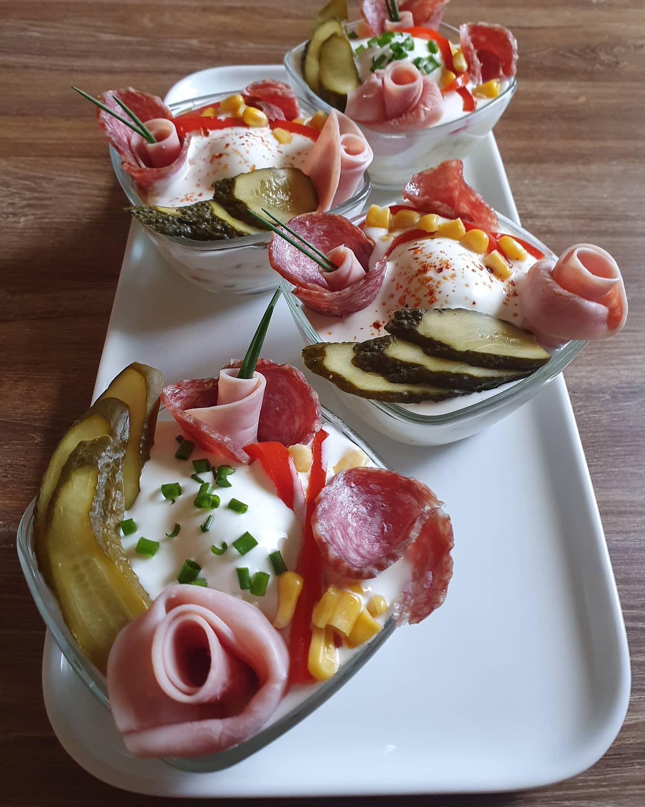

Ruské vajcia podľa @kreativ_mamka_ — Normy Jedál
Naše obľúbené ruské / obložené vajce 🍀
#kreativnamama❤️ #kreativneranajky #ruskevajce #ruskevajcia #zemiakovysalat #easterfood #easterfoodideas #easterfoods #mutimiteszel #dnesjem #dnesraňajkujem #snidane #reggeli #ruskevejce #creativeplates #creativeplate #foody #foodstagram #eggs #tastyfood #staraklasika #parizskysalat #delicious #homemadefood